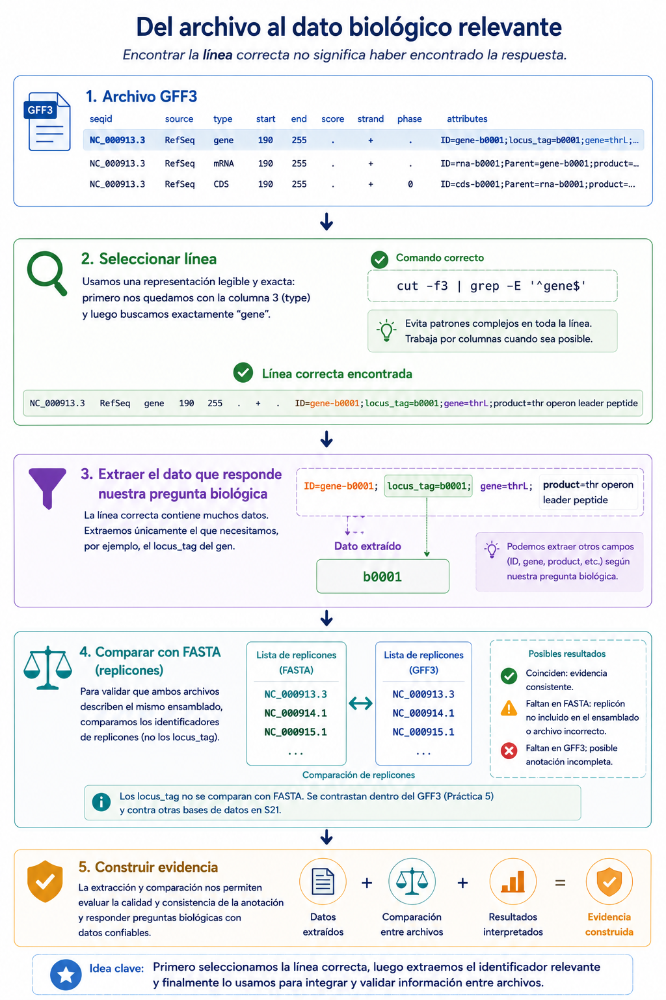
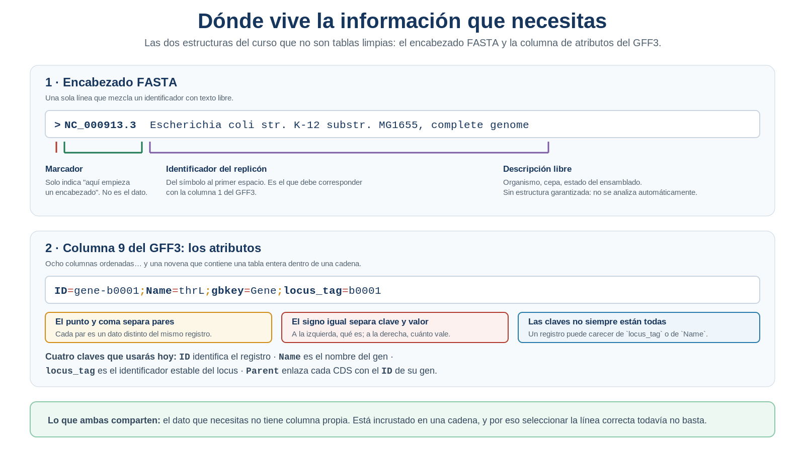
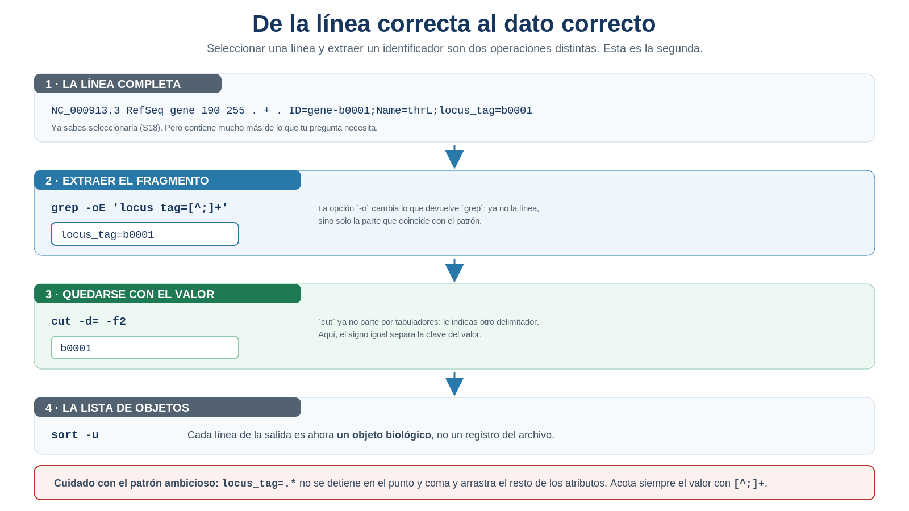
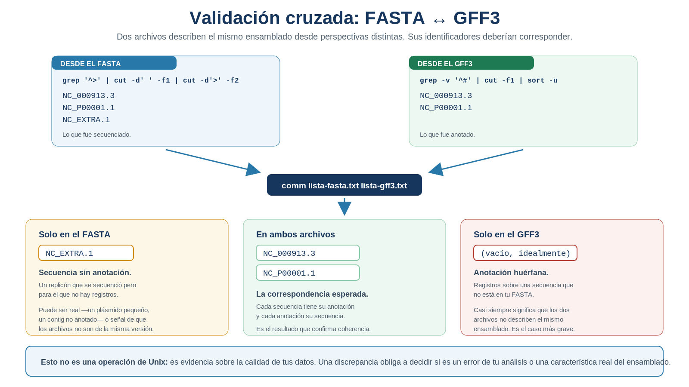
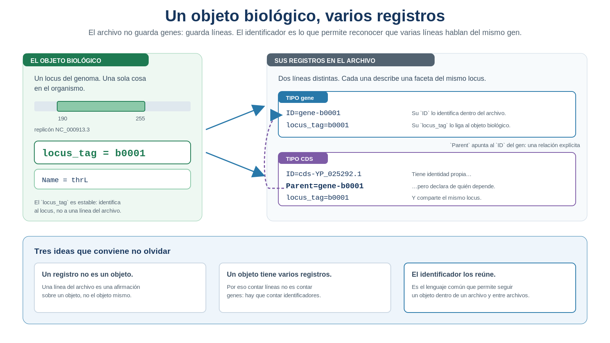

S19 — Extraer: identificadores, encabezados y campos dentro del texto
Antes de clase leerás las secciones marcadas como indispensables y harás un primer intento: escribir, sin abrir los archivos, qué replicones crees que tiene tu genoma y si esperas que el FASTA y el GFF3 coincidan. Durante el taller extraerás esas dos listas de verdad y las compararás. Después integrarás en doc/protocolo.md la sección Correspondencia entre archivos. El primer intento es formativo: importa si anticipaste que dos archivos del mismo ensamblado pueden no decir exactamente lo mismo.
Ficha del módulo
| Elemento | Descripción |
|---|---|
| Sesión | S19, 2 horas |
| Unidad | U4. Procesamiento y exploración de datos genómicos |
| Competencia principal | D. Análisis y exploración de datos genómicos |
| Competencias integradas | A. Documentación reproducible; B. Entorno Unix; C. Manejo de datos biológicos |
| Propósito | Recuperar los identificadores que están incrustados dentro del texto —encabezados FASTA y columna de atributos del GFF3— y usarlos para comprobar que ambos archivos describen el mismo ensamblado |
| Consulta previa del Plan | Material clásico de expresiones regulares (aplicación); este módulo lo sustituye como lectura autocontenida |
| Lectura indispensable | Secciones 1–7 de este módulo (~45 min) |
| Lectura de consulta | Buffalo (2015), Cap. 7; especificación GFF3, sección de atributos; ProfeUnix Bioinfo |
| Primer intento | Práctica 1: predecir los replicones y su correspondencia, 20 min, sin abrir archivos |
| Evidencia | Correspondencia entre archivos: listas de identificadores extraídas de cada archivo, su comparación e interpretación de cualquier discrepancia |
| Tarea numerada | Ninguna nueva. La evidencia se incorpora a doc/protocolo.md |
Hasta ahora seguías archivos: abrías uno, lo describías y pasabas al siguiente. A partir de hoy empiezas a seguir objetos biológicos: un gen, un replicón, un locus, que aparece representado en varios sitios a la vez. Lo que hace posible ese cambio no es un comando nuevo, sino el identificador.
Relación con lo que ya sabes
S18 S19
Describir qué línea quiero → Reconocer de qué objeto habla
"esta línea es la correcta" "esta línea y aquella describen el mismo gen"En S18 conseguiste por fin decirle al archivo exactamente qué línea querías. Pero la línea te llega entera, y tu pregunta biológica casi nunca es sobre la línea: es sobre un fragmento concreto que está dentro de ella.
| Habilidad que ya tienes | Dónde la aprendiste | Qué cambia en S19 |
|---|---|---|
Anclar patrones con ^ y $ |
S18 | Sigues usándolos, pero ahora el patrón describe el fragmento, no la línea |
| Describir caracteres con clases | S18 | La clase negada [^;] se vuelve la herramienta central: “hasta el separador” |
Filtrar con grep y grep -v |
S12, S18 | Filtras para acotar el conjunto antes de extraer |
Cortar columnas con cut -f |
S11 | Descubres que cut sabe partir por cualquier delimitador, no solo por tabuladores |
Construir catálogos con sort -u |
S13 | El catálogo deja de ser de categorías y pasa a ser de objetos identificados |
Contar con uniq -c |
S13 | Cuentas cuántas veces aparece cada identificador, y eso revela la jerarquía del archivo |
Lo nuevo de hoy no es una técnica de búsqueda más precisa, ni un comando: es un objeto de estudio distinto. Hasta ahora analizabas líneas; a partir de hoy trabajas con los identificadores que designan a los objetos biológicos que esas líneas describen.
Tu lugar en el ciclo de la evidencia
Las seis sesiones que cierran la unidad no enseñan seis herramientas: enseñan los seis pasos por los que una observación se convierte en evidencia científica. En S18 resolviste el primero. Hoy trabajas el segundo.
S18 SELECCIONAR la evidencia correcta ✔ resuelto
▶ S19 IDENTIFICAR el objeto biológico correcto ← estás aquí
S20 NORMALIZAR la evidencia para compararla
S21 CONFRONTAR con una fuente ajena
S22 CUANTIFICAR e interpretar
S23 INTEGRAR el ciclo completo, reproducibleSeleccionar las líneas correctas no basta: hace falta saber de qué objeto habla cada una. Sin esa respuesta, ninguno de los pasos siguientes es posible —no se puede normalizar, confrontar ni cuantificar aquello que todavía no sabes nombrar—.
Dónde estás en la investigación
| Pregunta de la investigación | En S19 |
|---|---|
| ¿Qué tipos de features contiene la anotación? | ✔ Resuelta en S13, refinada en S18 |
| ¿Cuántos genes existen? | ✔ Refinado en S18; se cierra en S22 |
| ¿Cuántos replicones tiene el genoma? | ✔ Validado hoy con una cuarta evidencia: la comparación entre archivos |
| ¿Cuáles son los identificadores de los replicones? | ✔ Se resuelve hoy |
| ¿Coinciden esos identificadores entre FASTA y GFF3? | ✔ Se resuelve hoy |
| ¿Qué identificadores tienen los genes? | ✔ Se resuelve hoy |
| ¿Cómo se relacionan los genes con sus CDS? | ✔ Primera respuesta hoy (se refina en S22) |
¿Todos los genes tienen locus_tag? |
✔ Se resuelve hoy |
| ¿Puedo comparar estas listas con las de otra base de datos? | ☐ S20 (normalizar) y S21 (confrontar) |
| ¿Cuántos genes hay por replicón y por cadena? | ☐ S22 |
Fíjate en la penúltima fila. Hoy vas a extraer listas de identificadores, pero todavía no podrás compararlas con las de otra fuente. Descubrirás por qué al final de la sesión: es el motor de S20.
Resultados de aprendizaje
Al finalizar la sesión podrás:
- Distinguir el registro del objeto biológico que representa, y explicar por qué un objeto puede aparecer en varias líneas.
- Localizar dónde guarda cada archivo sus identificadores: el encabezado FASTA y la columna de atributos del GFF3, distinguiendo la parte estructurada del texto libre.
- Recuperar un fragmento de una línea con
grep -o, acotándolo con una clase negada. - Descomponer un par
clave=valorusandocutcon un delimitador distinto del tabulador. - Construir el catálogo de identificadores de un archivo y comprobar si contiene repeticiones.
- Comparar dos listas de identificadores y leer las tres zonas del resultado.
- Interpretar una discrepancia entre archivos como lo que es: una afirmación sobre la calidad de los datos, no un fallo del comando.
- Distinguir un error del análisis de una característica real del ensamblado, y argumentar cuál de los dos es más probable.
- Relacionar los registros de un mismo objeto biológico —gen y CDS— mediante el atributo que los enlaza.
Lista de verificación previa
Antes del taller comprueba que tienes a mano:
Crea hoy results/s19/. Vas a generar varias listas y el valor de la sesión está justamente en poder compararlas después.
Ruta de S19
| Momento | Qué hacer | Tiempo estimado |
|---|---|---|
| Antes de clase | Leer las secciones 1–7; resolver la Práctica 1 (predicción de replicones) | 45 + 20 min |
| Taller (1.ª hora) | Extraer identificadores de ambos archivos (Prácticas 2 y 3) y compararlos | 60 min |
| Taller (2.ª hora) | Atributos de los genes (Práctica 4) y relación gen–CDS (Práctica 5) | 60 min |
| Después del taller | Redactar la sección Correspondencia entre archivos del protocolo | 40 min |
Las secciones 1–7 son indispensables. La sección 8 se trabaja después del taller.
1. Encontrar la línea correcta todavía no responde la pregunta [Indispensable]
Al cerrar S18 tenías un patrón que selecciona exactamente lo que querías. Ejecútalo otra vez y mira lo que devuelve:
NC_000913.3 RefSeq gene 190 255 . + . ID=gene-b0001;Name=thrL;locus_tag=b0001Es la línea correcta. Y sin embargo, si tu pregunta era “¿qué genes hay en este replicón?”, esa línea no es la respuesta: es el sitio donde está la respuesta. El gen se llama b0001, cuatro caracteres perdidos dentro de ochenta.
La pregunta que gobierna toda esta sesión es esta:
¿Cómo recupero el identificador del objeto biológico que estoy estudiando?
Y detrás de ella hay una distinción que vas a encontrar durante el resto del curso:
seleccionar líneas ≠ recuperar objetos biológicosSeleccionar reduce el número de líneas; recuperar el identificador te da el objeto del que la línea habla. Confundir ambas cosas es la causa de la mitad de los análisis mal planteados.
IDEA CLAVE. Una línea seleccionada correctamente sigue siendo un contenedor. Mientras el identificador viaje dentro de una cadena de texto, no puedes contarlo, ordenarlo ni compararlo con nada. Recuperarlo es lo que convierte una línea en un objeto biológico con nombre.
Ese es el recorrido completo de la sesión, en cinco pasos:

Figura 19.1. Del archivo al dato biológico relevante. Encontrar la línea correcta no significa haber encontrado la respuesta: hacen falta tres pasos más —extraer, comparar y construir evidencia— y son el contenido de esta sesión. Elaboración propia.
El patrón del paso 2 está escrito con abreviaturas (\S, \s) que pertenecen a otra variante del lenguaje y que además, tal como aparecen, no encontrarían nada. En esta sesión seguirás usando la estrategia de S18, más legible: recortar el campo con cut y anclar el patrón. Y en el paso 4, ten presente que un locus_tag no se compara con los encabezados del FASTA: allí viven los identificadores de los replicones. La comparación que harás en la Práctica 3 es entre replicones; los locus_tag se comparan entre registros del propio GFF3 (Práctica 5) y, más adelante, con los de otra base de datos (S21).
2. Dónde viven los identificadores [Indispensable]
Si el identificador es lo que buscas, la primera pregunta es dónde está guardado. Y la respuesta, en tus dos archivos, es incómoda: en ninguna columna propia. En el GFF3 vive dentro de la novena columna, que resulta contener otra tabla dentro; en el FASTA, dentro de la primera línea de cada secuencia, mezclado con texto libre.

Figura 19.2. Dónde vive la información que necesitas. En ambos archivos el dato carece de columna propia: está incrustado en una cadena, junto a texto que no vas a usar. Elaboración propia.
2.1 El encabezado FASTA
De las tres partes que muestra la figura, solo la del medio identifica algo: el identificador del replicón, entre el símbolo > y el primer espacio. Lo que sigue es descripción legible para ti, pero sin estructura garantizada —cada base de datos la escribe a su manera—, y por eso el identificador se corta justo ahí.
2.2 La columna de atributos del GFF3
Dos separadores, dos niveles: el punto y coma separa un dato del siguiente, y el signo igual separa, dentro de cada par, qué es de cuánto vale.
De todas las claves posibles, cuatro te acompañarán el resto del curso, y conviene distinguirlas bien porque no identifican lo mismo:
| Clave | Qué representa | Dónde aparece |
|---|---|---|
ID |
Identificador del registro dentro del archivo | En casi todos los registros |
Name |
Nombre del gen, cuando existe | Sobre todo en registros gene |
locus_tag |
Identificador estable del locus, asignado por quien anotó el genoma | En gene y en sus CDS |
Parent |
El ID del registro del que este depende |
En CDS, exon, mRNA |
La especificación GFF3 no obliga a que un registro tenga locus_tag ni Name. Que una clave falte en algunos registros es información biológica sobre cómo se anotó ese genoma, no un archivo defectuoso. Lo comprobarás en la Práctica 4.
IDEA CLAVE. Fíjate en la diferencia entre las dos primeras filas de la tabla:
IDidentifica una línea dentro de un archivo;locus_tagidentifica un locus dentro de un organismo. El primero deja de servir en cuanto cambias de archivo; el segundo, no. Esa distinción es la que hará posible todo lo que viene después.
Práctica 1 — ¿Qué replicones esperas encontrar? (antes de clase, primer intento)
Pregunta biológica. ¿De cuántas moléculas de DNA está compuesto tu genoma, cómo se llaman, y esperarías que el FASTA y el GFF3 digan exactamente lo mismo?
Objetivo. Comprometerte con una predicción antes de extraer nada, y sobre todo anticipar si dos archivos del mismo ensamblado tienen que coincidir.
Antes de clase (primer intento). En doc/s19-primer-intento.md:
Recupera. Copia de tu protocolo el número de replicones que estableciste en S13 y los identificadores que anotaste entonces.
Predice la correspondencia. ¿Esperas que la lista de replicones del FASTA sea idéntica a la del GFF3? Escribe sí o no, y por qué.
Imagina la discrepancia. Supón que no coinciden. Escribe dos explicaciones posibles: una en la que el problema esté en tu análisis, otra en la que la diferencia sea real y biológica.
Anticipa los genes. ¿Crees que todos los genes de tu anotación tienen
locus_tag? ¿YName? Da un porcentaje aproximado para cada uno y justifícalo.Piensa en la jerarquía. Si un gen genera varios registros —el
geney suCDS—, ¿qué atributo crees que permite saber que ambos hablan del mismo objeto?
Durante el taller. Extraerás las dos listas de verdad, las compararás y contrastarás cada predicción con la evidencia.
Después del taller. La comparación entra en la sección Correspondencia entre archivos del protocolo (Sección 8).
Criterio de logro: tus dos explicaciones del paso 3 son distintas entre sí y ambas plausibles, y tu predicción sobre locus_tag tiene un argumento, no solo un número.
3. Recuperar el identificador [Indispensable]
Sabes dónde está el identificador. Falta sacarlo de ahí, y para eso necesitas que la búsqueda te devuelva la parte que coincide en lugar de la línea que la contiene. La herramienta es la de siempre, grep, con una opción que no habías usado.
Sintaxis mínima — grep -o
grep -oE 'locus_tag=[^;]+' anotacion.gff3¿Qué hace? Devuelve solo el fragmento que coincide con el patrón, uno por línea, en lugar de la línea completa. Si una línea contiene varias coincidencias, las devuelve todas.
¿Por qué aparece en esta sesión? Porque es la diferencia exacta entre localizar y recuperar. Con -o, el patrón deja de describir “qué líneas quiero” y pasa a describir “qué trozo quiero”.
Fíjate en el patrón: [^;]+ significa “uno o más caracteres que no sean punto y coma”, es decir, todo el valor hasta el siguiente separador. Es la clase negada de S18, ahora con un propósito nuevo: marcar dónde termina el dato.
Si escribes locus_tag=.*, el comodín no se detiene en el punto y coma: se lleva el resto de los atributos de la línea. La salida seguirá pareciendo razonable —empieza por locus_tag=— pero arrastrará product=, gbkey= y todo lo que venga detrás. Acota siempre el valor con [^;]+.
Con eso ya tienes el par completo. Falta quedarte con el valor.
Sintaxis mínima — cut -d
cut -d= -f2 # parte por el signo igual y toma el segundo campo
cut -d' ' -f1 # parte por el espacio y toma el primero¿Qué hace? cut no está limitado al tabulador: con -d le indicas qué carácter separa los campos. Todo lo demás funciona igual que en S11.
¿Por qué aparece en esta sesión? Porque los identificadores que buscas vienen en pares clave=valor y en encabezados separados por espacios. El delimitador ya no lo pone el formato de la tabla: lo pones tú, según la estructura que tengas delante.

Figura 19.3. De la línea correcta al dato correcto. Cada eslabón hace una sola cosa: acotar el fragmento, quedarse con el valor y reducir la lista a objetos distintos. Elaboración propia.
Encadenados, los dos comandos convierten un archivo de texto en una lista de objetos biológicos con nombre:
grep -oE 'locus_tag=[^;]+' results/s12/anotaciones-sin-directivas.gff \
| cut -d= -f2 \
| sort -u > results/s19/locus-tags.txtLéela como una frase: quédate con el par que empieza por locus_tag= y termina antes del punto y coma, conserva solo el valor y deja una sola aparición de cada uno.
IDEA CLAVE. Las dos opciones son intercambiables por otras; lo que no cambia es el resultado: pasar de un archivo lleno de líneas a una lista de objetos con nombre. Esa lista es lo que podrás contar, ordenar y —sobre todo— comparar con otra.
Y comparar es justamente lo que hace falta ahora, porque tus dos archivos deberían nombrar los mismos replicones. Empieza por conseguir esas dos listas.
Práctica 2 — ¿Cómo se llaman los replicones de tu genoma? (durante el taller)
Pregunta biológica. ¿Cómo se llaman exactamente las moléculas de DNA que componen tu genoma, según cada uno de tus dos archivos?
Objetivo. Producir, por separado, las dos listas que compararás en la Práctica 3.
Parte A — Desde el FASTA
Localiza los encabezados. Son las líneas que empiezan por
>; ya sabes describirlas:grep -E '^>' data/source/genoma.fnaAnota cuántas hay. Ese número debería coincidir con uno de los tres caminos de S13.
Recorta el identificador. El identificador termina en el primer espacio, y el
>sobra:grep -E '^>' data/source/genoma.fna \ | cut -d' ' -f1 \ | cut -d'>' -f2 \ | sort > results/s19/replicones-fasta.txtEntiende el segundo
cut. Como la línea empieza por>, ese carácter deja a su izquierda un campo vacío: el identificador queda en el campo 2. Comprueba qué pasa si pides-f1en vez de-f2y explica la salida.Verifica. Abre el archivo generado. ¿Hay exactamente una línea por secuencia? ¿Alguna trae caracteres extraños o restos de la descripción?
Parte B — Desde el GFF3
Extrae la columna 1. Aquí no hace falta
grep -o: el identificador sí tiene columna propia. Lo que hace falta es descartar las directivas del encabezado:grep -Ev '^#' data/source/anotacion.gff3 \ | cut -f1 \ | sort -u > results/s19/replicones-gff3.txtCompara con las directivas. Extrae también los identificadores declarados en las líneas
##sequence-regiondel encabezado y comprueba si coinciden con los del cuerpo. Es la misma validación interna que hiciste en S13, ahora con identificadores en lugar de números.Documenta. Anota los dos comandos exactos y cuántas líneas produce cada lista.
Producto esperado. Dos archivos en results/s19/, cada uno con la lista ordenada de identificadores de replicones según su archivo de origen.
Criterio de logro: explicas por qué en un archivo hizo falta extraer y en el otro bastó con cortar una columna, y tus listas no contienen restos de descripción ni líneas vacías.
4. Comparar: la validación cruzada [Indispensable]
Tienes dos listas de nombres. La pregunta interesante no es qué contiene cada una, sino si nombran a los mismos objetos.
Y hay una razón biológica para esperar que sí: el FASTA y el GFF3 de un ensamblado son dos descripciones de los mismos replicones. Uno dice qué se secuenció; el otro, qué se anotó sobre esa secuencia. Si un identificador aparece en uno y no en el otro, algo hay que explicar.
Sintaxis mínima — comm
comm archivo1.txt archivo2.txt # tres columnas: solo en 1, solo en 2, en ambos
comm -3 archivo1.txt archivo2.txt # oculta las líneas comunes: muestra solo las diferencias
comm -23 archivo1.txt archivo2.txt # solo lo que está únicamente en el archivo 1¿Qué hace? Compara dos listas ordenadas y clasifica cada línea en tres grupos: presente solo en la primera, solo en la segunda, o en ambas.
¿Por qué aparece en esta sesión? Porque la pregunta “¿coinciden?” no se responde mirando dos listas a ojo. comm no es el objetivo del aprendizaje: es el instrumento que convierte esa pregunta en evidencia.
comm exige que las dos listas estén ordenadas. Si no lo están, no da error: devuelve un resultado incorrecto con toda naturalidad. Por eso las prácticas de arriba terminan en sort o sort -u. Es exactamente la misma trampa que uniq te tendió en S13.

Figura 19.4. Las tres zonas de una validación cruzada y su lectura biológica. Una discrepancia obliga a decidir si es un error del análisis o una característica real del ensamblado. Elaboración propia.
Como resume la figura, ninguna de las tres zonas es automáticamente “un error”: cada una es una afirmación distinta sobre tus datos, y la de la derecha —anotación sin secuencia— es la única que casi siempre delata archivos de versiones distintas.
IDEA CLAVE. Esto no es comparar archivos: es comprobar que el mismo objeto biológico se puede seguir de una representación a otra. Hasta hoy validabas un resultado con otro camino dentro del mismo archivo; hoy usas una fuente distinta, que es justamente la independencia que en S13 declaraste que te faltaba.
Solo queda comprobarlo en tus propios datos.
Práctica 3 — ¿Describen tus dos archivos el mismo ensamblado? (durante el taller)
Pregunta biológica. ¿Corresponden los replicones anotados con los replicones secuenciados, o hay alguno que sobre o falte?
Objetivo. Realizar tu primera validación cruzada entre dos fuentes y aprender a interpretar el resultado, coincida o no.
Parte A — Comparar
Predice otra vez. Antes de ejecutar, apuesta: ¿saldrá alguna diferencia? Escribe tu respuesta junto a la que diste en la Práctica 1.
Compara. Con las dos listas de la Práctica 2, ya ordenadas:
comm results/s19/replicones-fasta.txt results/s19/replicones-gff3.txtLee las tres columnas. Identifica qué hay en cada una. Si te resulta confuso el sangrado, ejecuta también las versiones filtradas:
comm -23 results/s19/replicones-fasta.txt results/s19/replicones-gff3.txt # solo en el FASTA comm -13 results/s19/replicones-fasta.txt results/s19/replicones-gff3.txt # solo en el GFF3
Parte B — Interpretar
Si coinciden por completo, no has terminado: pregúntate qué error no habría detectado esta comprobación. Por ejemplo, ¿detectaría que las coordenadas de la anotación son incorrectas? ¿Detectaría que falta la mitad de los genes? Escríbelo.
Si no coinciden, aplica el paso 3 de tu primer intento: para cada identificador discrepante, formula las dos explicaciones —error del análisis o característica del ensamblado— y decide cuál es más probable con evidencia. Comprueba antes lo obvio: que ambas listas estén ordenadas, que no arrastren espacios y que no hayas mezclado versiones de los archivos.
Contrasta con la procedencia. Vuelve a la ficha de la Unidad 3: ¿descargaste ambos archivos del mismo ensamblado y de la misma fecha? La respuesta a una discrepancia suele estar ahí.
Cierra la pregunta de S13. Añade este resultado como cuarta evidencia del número de replicones. A diferencia de las tres anteriores, esta compara identidades entre dos archivos distintos, no cantidades dentro del mismo.
Producto esperado. El resultado de la comparación, con su interpretación biológica y —si hubo discrepancias— la decisión razonada sobre su origen.
Criterio de logro: interpretas el resultado en ambos casos, incluso cuando todo coincide, y distingues explícitamente lo que esta validación demuestra de lo que no puede demostrar.
5. Los identificadores de los genes [Indispensable]
Los replicones eran el caso fácil: en el GFF3 tenían columna propia. Los genes no: sus identificadores viven dentro del campo de atributos, y ahí es donde grep -o se vuelve imprescindible.
Extrae los locus_tag de tu anotación:
grep -oE 'locus_tag=[^;]+' results/s12/anotaciones-sin-directivas.gff \
| cut -d= -f2 \
| sort -u > results/s19/locus-tags.txtY ahora fíjate en algo importante. Ejecuta las dos versiones:
grep -oE 'locus_tag=[^;]+' results/s12/anotaciones-sin-directivas.gff | wc -l # apariciones
grep -oE 'locus_tag=[^;]+' results/s12/anotaciones-sin-directivas.gff | sort -u | wc -l # objetos distintosEl primer número es mayor que el segundo, y la diferencia no es un error: es la jerarquía del archivo. Un mismo locus_tag aparece en la línea del gen y otra vez en la de su CDS, porque ambos registros describen el mismo locus.
Aquí reaparece, con una cara nueva, la advertencia de S13: un registro no es un objeto biológico. La diferencia es que hoy puedes demostrarlo en lugar de solo declararlo, porque tienes los identificadores para contarlos: el segundo número cuenta objetos; el primero, las veces que el archivo habla de ellos.
IDEA CLAVE. Cuando un identificador aparece varias veces, esa repetición no sobra: es el archivo diciéndote que un objeto biológico se describe desde varios registros. Contar líneas y contar genes son operaciones distintas, y solo el identificador te permite hacer la segunda.
Pero un identificador repetido no explica qué relación hay entre esos registros. Esa es la siguiente pregunta.
Práctica 4 — ¿Todos tus genes tienen locus_tag? (durante el taller)
Pregunta biológica. ¿Está identificado de forma estable cada gen anotado en tu genoma, o hay registros sin identificador de locus?
Objetivo. Auditar la completitud de un atributo y decidir qué significa biológicamente cada ausencia.
Parte A — Contar
Recupera tu conteo de genes. Es el número refinado de S18.
Cuenta los que declaran
locus_tag. Restringe primero al tipo correcto, como en S18:grep -Ev '^#' data/source/anotacion.gff3 \ | cut -f3,9 \ | grep -E $'^gene\t' \ | grep -c 'locus_tag='Compara los dos números. ¿Coinciden? Si coinciden, todos tus genes tienen
locus_tag. Si no, la diferencia es el número de registros que carecen de él.
El resultado depende de tu genoma y de quién lo anotó, así que no hay una cifra única. En un ensamblado de referencia bien curado lo habitual es que todos los gene declaren locus_tag y la diferencia sea cero. Si te sale distinta de cero, no supongas que te equivocaste al contar: mira las líneas concretas que faltan antes de concluir nada. Las causas frecuentes son que el registro pertenezca a una categoría de gen no codificante anotada de otro modo, o que provenga de una región añadida después. Una diferencia explicada vale más que una diferencia de cero sin comprobar.
Parte B — Investigar las ausencias
Localízalos. Cambia el último eslabón por
grep -v 'locus_tag='y mira esas líneas completas. ¿Qué tienen en común? ¿Son de un tipo concreto, de una fuente concreta, de un replicón concreto?Interpreta. Un gen sin
locus_tagno es necesariamente un error: puede ser un registro añadido por un predictor distinto al de la anotación principal, o un tipo de elemento que la convención no numera. Contrasta con el inventario de fuentes que hiciste en S13.Haz lo mismo con
Name. Casi con seguridad el porcentaje será mucho menor. Explica por qué: ¿qué diferencia hay entre tener nombre y tener identificador? ¿Cuál de los dos puede faltar sin que se pierda información?Contrasta con tu predicción. Vuelve al paso 4 de la Práctica 1 y compara tus porcentajes con los reales.
Producto esperado. El porcentaje de genes con locus_tag y con Name, con la caracterización de las ausencias y su interpretación.
Criterio de logro: no te limitas a contar ausencias: las caracterizas y propones una explicación biológica o de procedencia, distinguiéndola de un fallo de tu consulta.
6. Parent: la primera relación explícita del curso [Indispensable]
Si un gen y su CDS son dos registros distintos, ¿cómo sé que hablan del mismo objeto? El propio archivo lo dice, y lo dice de dos maneras a la vez.

Figura 19.5. Un objeto biológico, varios registros. El gen b0001 es una sola cosa en el organismo, pero en el archivo aparece repartido en líneas distintas: el locus_tag compartido y el Parent declarado son lo que permite reconocer que todas hablan de él. Elaboración propia.
Los dos mecanismos son distintos y conviene no mezclarlos. El locus_tag compartido es una coincidencia de valor: dos registros que traen la misma etiqueta. El Parent, en cambio, es una declaración: la CDS afirma de qué registro depende, señalando su ID.
Y ahí ocurre algo que no había pasado en todo el curso. Hasta ahora, tus archivos eran conjuntos de datos: valores en columnas, categorías, coordenadas. Parent es el primer dato que no describe un objeto, sino un vínculo entre dos. Con él, el GFF3 deja de ser una tabla y pasa a ser una estructura con relaciones: un gen del que cuelgan sus productos.
IDEA CLAVE. Un identificador compartido sugiere que dos registros hablan del mismo objeto;
Parentlo afirma. Relacionar registros por un identificador es la operación básica de todo análisis integrativo, y acabas de hacerla por primera vez dentro de un archivo.
Extraer esos enlaces es una operación que ya sabes hacer:
grep -oE 'Parent=[^;]+' results/s12/anotaciones-sin-directivas.gff \
| cut -d= -f2 \
| sort -u > results/s19/genes-con-cds.txtCada línea de ese archivo es un gen que tiene al menos un registro dependiente. Comparada con la lista de todos los ID de genes, responde una pregunta biológica real: ¿qué genes no producen proteína anotada?
Práctica 5 — ¿Qué genes no tienen una CDS asociada? (durante el taller)
Pregunta biológica. ¿Todos los genes de tu anotación producen una región codificante, y qué son los que no?
Objetivo. Relacionar dos conjuntos de registros mediante un identificador común y darle sentido biológico a la diferencia.
Pasos.
Extrae los
IDde los genes. Restringe al tipogeneantes de extraer:grep -Ev '^#' data/source/anotacion.gff3 \ | cut -f3,9 \ | grep -E $'^gene\t' \ | grep -oE 'ID=[^;]+' \ | cut -d= -f2 \ | sort -u > results/s19/genes-id.txtExtrae los
Parentdeclarados por las CDS. Mismo procedimiento, restringiendo aCDS.Compara. Usa
commcomo en la Práctica 3. La zona “solo en la lista de genes” contiene los genes sin CDS asociada.Interpreta. Contrasta ese número con la frecuencia de
pseudogenede tu inventario de S13. ¿Se parecen? Un pseudogén, por definición, no produce una proteína funcional, así que es esperable que no tenga CDS. Si los números no cuadran, tienes una pregunta nueva.Verifica la dirección contraria. ¿Hay algún
Parentque no corresponda a ningúnIDde gen? Si aparece alguno, tu anotación tendría un registro huérfano: compruébalo antes de afirmarlo, porque también puede ser que su padre sea de otro tipo, comomRNA.Declara el límite. Esta comparación cuenta relaciones declaradas en el archivo, no relaciones biológicas comprobadas. Que un gen declare una CDS no demuestra que produzca proteína: demuestra que quien anotó el genoma así lo consideró.
Producto esperado. El número de genes sin CDS asociada, contrastado con el conteo de pseudogenes e interpretado.
Criterio de logro: usas un identificador para relacionar dos conjuntos de registros y distingues entre lo que el archivo declara y lo que ocurre en el organismo.
7. Qué mejoró hoy y qué sigue sin resolverse [Indispensable]
| Pregunta | Estrategia en S18 | Estrategia en S19 | Qué mejoró | Qué sigue faltando |
|---|---|---|---|---|
| ¿Cuáles son los replicones? | Se contaban, no se nombraban | Lista de identificadores por archivo | De cuántos a cuáles: ya puedes referirte a cada uno | — |
| ¿Coinciden los dos archivos? | No se podía responder | Comparación de listas | Aparece la validación cruzada: evidencia de una fuente distinta | Solo compara identidades, no contenidos |
| ¿Qué identificadores tienen los genes? | La línea llegaba entera | grep -o + cut -d |
De contenedor a dato | — |
¿Todos los genes tienen locus_tag? |
No se podía responder | Auditoría de un atributo | Se mide la completitud de la anotación | — |
| ¿Qué genes producen CDS? | No se podía responder | Relación por ID y Parent |
Primer análisis relacional del curso | Cuenta relaciones declaradas, no comprobadas |
| ¿Coinciden con otra base de datos? | — | — | — | Las listas están sucias: no se pueden comparar todavía |
Hoy dejaste de seguir archivos para empezar a seguir objetos. Recuperaste sus identificadores, los usaste para reconocer al mismo replicón en dos representaciones distintas y, con eso, obtuviste el primer resultado del curso que ninguno de los dos archivos contenía por separado.
Pero mira la última fila, porque ahí está la deuda nueva.
Toma tu lista de replicones e imagina que quisieras compararla con la de otra base de datos. Te encontrarías cosas como estas:
tu lista otra fuente
NC_000913.3 NC_000913
NC_P00001.1 nc_p00001.1
NC_EXTRA.1 chr:NC_EXTRA.1Son los mismos objetos, escritos de forma distinta: con versión y sin versión, en mayúsculas y en minúsculas, con prefijo y sin él. Y comm los declararía distintos sin dudarlo, porque compara cadenas, no significados.
Comparar exige primero normalizar. Ese es el contenido de S20.
8. Documentar: la sección del protocolo [Indispensable]
Agrega a doc/protocolo.md, después de la sección de S18, la sección de hoy.
## S19 — Correspondencia entre archivos
- **Pregunta biológica:** ¿Describen mi FASTA y mi GFF3 el mismo ensamblado, y qué identificadores
representan a los objetos biológicos que estoy estudiando?
- **Hipótesis o expectativa previa:** (predicción de la Práctica 1: replicones esperados, si
esperaba coincidencia y las dos explicaciones posibles de una discrepancia)
- **Datos necesarios y archivos utilizados:** …
- **Estrategia de análisis:** extraer los identificadores incrustados en el texto de cada archivo,
reducirlos a objetos distintos y comparar ambas listas como validación cruzada.
- **Comandos ejecutados:** (exactos, con sus comillas y sus redirecciones)
- **Resultados obtenidos:**
**Identificadores de replicones**
| Archivo | Comando de extracción | N.º de identificadores | Archivo generado |
| --- | --- | ---: | --- |
| FASTA | … | … | `results/s19/replicones-fasta.txt` |
| GFF3 (cuerpo) | … | … | `results/s19/replicones-gff3.txt` |
| GFF3 (directivas) | … | … | … |
**Resultado de la comparación**
| Zona | Identificadores | Interpretación |
| --- | --- | --- |
| Solo en el FASTA | … | … |
| En ambos archivos | … | … |
| Solo en el GFF3 | … | … |
**Completitud de los atributos de los genes**
| Atributo | Genes que lo declaran | % | Caracterización de las ausencias |
| --- | ---: | ---: | --- |
| `locus_tag` | … | … | … |
| `Name` | … | … | … |
**Relación gen ↔ CDS**
| Medida | Valor | Contraste |
| --- | ---: | --- |
| Genes con al menos una CDS | … | … |
| Genes sin CDS asociada | … | Frecuencia de `pseudogene` en S13: … |
| `Parent` sin gen correspondiente | … | … |
- **Validación realizada:** cómo comprobaste cada extracción antes de aceptarla (inspección de la
lista generada, apariciones frente a objetos distintos, listas ordenadas antes de comparar,
contraste con los conteos de S13 y S18).
- **Interpretación biológica:** qué dice la correspondencia sobre la calidad de tu ensamblado; qué
significan las ausencias de `locus_tag`; qué tipo de genes carece de CDS.
- **Discrepancias encontradas e hipótesis:** para cada una, las dos explicaciones posibles —error del
análisis o característica del ensamblado— y cuál sostienes, con su evidencia.
- **Limitaciones de esta estrategia:**
- La comparación demuestra que los identificadores corresponden, **no** que las coordenadas o los
conteos sean correctos.
- `Parent` describe relaciones **declaradas por el anotador**, no comprobadas experimentalmente.
- Las listas extraídas conservan el formato original: prefijos, versiones y mayúsculas tal como
vienen. Compararlas con una fuente externa aún no es seguro (S20).
- Un atributo ausente puede reflejar la convención de la fuente de anotación, no un defecto.
- **Mejoras respecto a la estrategia anterior:** los replicones dejaron de ser un número para pasar a
ser objetos con nombre; la evidencia sobre su número ya no proviene de un solo archivo.
- **Nuevas preguntas que abre:** ¿cómo comparo estas listas con las de otra base de datos, si el
mismo objeto se escribe de forma distinta en cada una?Evidencia de la sesión
Entrega o conserva, según indique el docente:
doc/s19-primer-intento.mdcon la predicción y las dos explicaciones posibles (Práctica 1);results/s19/replicones-fasta.txtyresults/s19/replicones-gff3.txtcon sus comandos (Práctica 2);- el resultado de la comparación y su interpretación, coincidan o no las listas (Práctica 3);
- el porcentaje de genes con
locus_tagy conName, con la caracterización de las ausencias (Práctica 4); results/s19/genes-id.txty la comparación con losParentdeclarados (Práctica 5);- las declaraciones «puedo afirmar / todavía no puedo afirmar» de cada práctica;
- sección S19 de
doc/protocolo.md, con las secciones anteriores intactas.
Errores frecuentes y estrategias de diagnóstico
| Error | Por qué ocurre | Estrategia de diagnóstico |
|---|---|---|
Usar .* para acotar un valor |
El comodín parece inofensivo | Mirar la salida: si aparece product= o gbkey=, el patrón se pasó de largo. Usar [^;]+ |
| Comparar listas sin ordenarlas | comm no avisa: devuelve un resultado plausible |
Ejecutar sort -c lista.txt, que falla si no está ordenada |
Olvidar sort -u y contar apariciones como objetos |
Un identificador aparece en el gen y en su CDS | Comparar el resultado con y sin -u: la diferencia es la jerarquía |
| Extraer del archivo completo sin quitar directivas | El encabezado del GFF3 contiene texto que parece un identificador | Filtrar siempre con grep -v '^#' antes de cortar la columna 1 |
Quedarse con el > en los identificadores del FASTA |
Se corta por espacios pero no se quita el marcador | Abrir la lista generada: si las líneas empiezan por >, falta el segundo cut |
| Cortar el encabezado FASTA por espacios cuando no los tiene | Algunos encabezados no traen descripción | Comprobar con head antes; cut devuelve la línea entera si no encuentra el delimitador |
| Suponer que todos los registros tienen todos los atributos | La especificación GFF3 no lo exige | Contar los que lo declaran y compararlo con el total antes de dividir |
| Interpretar toda discrepancia como error | Se confunde diferencia con fallo | Formular siempre las dos explicaciones: análisis o ensamblado |
| Concluir que los archivos son correctos porque los identificadores coinciden | Se sobrestima el alcance de la validación | Preguntarse qué error no detectaría esta comprobación |
Confundir ID con locus_tag |
Ambos identifican, pero cosas distintas | ID identifica el registro dentro del archivo; locus_tag, el locus en el organismo |
| Afirmar que un gen “no produce proteína” | El archivo declara relaciones, no funciones | Escribir “no tiene CDS asociada en esta anotación” |
| Sobrescribir las listas de S13 y S18 | Se cree que lo nuevo sustituye a lo anterior | Guardar en results/s19/ y conservar lo demás intacto |
Rúbricas
| Criterio | Logrado | Parcialmente logrado | Aún no logrado |
|---|---|---|---|
| Primer intento | Predice los replicones, anticipa la correspondencia y formula dos explicaciones plausibles de una discrepancia | Predice sin justificar, o solo contempla el error propio | No presenta primer intento |
| Registro frente a objeto biológico | Explica con un ejemplo propio por qué la línea correcta no es la respuesta | Usa grep -o correctamente sin poder explicar la diferencia |
Sigue tratando la línea completa como el resultado |
| Extracción acotada | Usa [^;]+ y comprueba la salida antes de aceptarla |
Extrae correctamente pero no revisa la lista generada | Usa .* y arrastra atributos de más |
Uso de cut -d |
Elige el delimitador según la estructura y explica el campo elegido | Copia el comando sin razonar el número de campo | No consigue separar clave de valor |
| Objetos frente a apariciones | Distingue el conteo con y sin sort -u y explica la diferencia por la jerarquía |
Aplica -u sin interpretarlo |
Presenta apariciones como número de objetos |
| Validación cruzada | Compara listas ordenadas, lee las tres zonas e interpreta también la coincidencia total | Ejecuta comm y describe la salida sin interpretarla |
No ordena las listas o no interpreta el resultado |
| Interpretación de discrepancias | Formula las dos explicaciones, elige una y la sostiene con evidencia | Menciona una sola causa posible | Da por hecho que toda diferencia es un error |
| Completitud de atributos | Mide, caracteriza las ausencias y las relaciona con la fuente de anotación | Cuenta ausencias sin caracterizarlas | No audita los atributos |
| Análisis relacional | Relaciona genes y CDS por su identificador y contrasta con los pseudogenes | Obtiene la lista sin contrastarla | No consigue relacionar los dos conjuntos |
| Declaración de límites | Distingue lo declarado por el archivo de lo comprobado biológicamente | Declara límites genéricos | Presenta las relaciones del archivo como hechos biológicos |
| Reproducibilidad | Cada lista queda en results/s19/ con su comando exacto en el protocolo |
Documenta comandos sin los archivos generados | No documenta o sobrescribe lo anterior |
La rúbrica es formativa: la evidencia de esta sesión se integra al protocolo, que se evalúa de forma acumulativa.
Autoevaluación
Comprobación rápida — formativa, al final del taller
- ¿Por qué un registro no es un objeto biológico? Da un ejemplo de tu archivo.
- ¿Qué cambia exactamente la opción
-odegrep? - ¿Por qué
locus_tag=[^;]+y nolocus_tag=.*? - En
cut -d'>' -f2, ¿por qué el identificador está en el campo 2 y no en el 1? - ¿Por qué el número de apariciones de
locus_tages mayor que el de valores distintos? - ¿Qué le pasa a
commsi las listas no están ordenadas? ¿Te avisa? - Un identificador aparece solo en el GFF3. ¿Qué es lo primero que comprobarías?
- Tus dos listas coinciden por completo. ¿Qué error de tus archivos no habría detectado esa comprobación?
- ¿Qué diferencia hay entre
IDylocus_tag? ¿Cuál seguirías para comparar con otra base de datos? - Tienes las listas extraídas. ¿Por qué todavía no puedes compararlas con las de Ensembl?
Semáforo
- 🟢 Verde: extraigo un identificador acotando el patrón, distingo apariciones de objetos, comparo dos archivos por sus identificadores e interpreto el resultado tanto si coincide como si no.
- 🟡 Amarillo: consigo las listas pero me cuesta interpretar la comparación, o acepto una coincidencia total como prueba de que todo está bien.
- 🔴 Rojo: uso
.*sin acotar, comparo listas sin ordenar, o presento el número de apariciones como número de objetos biológicos.
Si estás en amarillo o rojo, repite las Prácticas 2 y 3: la habilidad central de hoy no es escribir la tubería, es leer lo que significa que dos archivos no digan lo mismo.
Cierre con IA: clásico vs. asistido
Trabaja primero a mano, después con IA. Las listas que extrajiste en el taller son tu línea base de comparación, no una verdad de referencia.
- Recupera una de tus extracciones y el número de identificadores que produjo.
- Pide una alternativa. Solicita al asistente otra forma de extraer el mismo atributo.
- Ejecuta las dos y compara. Si difieren, averigua cuál acota mal el valor: es el error más frecuente en este tipo de tareas.
- Valida de forma independiente: contrasta el número de objetos distintos con tu conteo de genes de S18, que no proviene de ninguna de las dos extracciones.
- Registra en
bitacora-ia.md: objetivo, herramienta, prompt, respuesta, verificación independiente, corrección y decisión final.
🤖 Prompt para ProfeUnix Bioinfo: > Tengo un archivo GFF3 y quiero obtener la lista de valores del atributo locus_tag que aparecen en > la columna 9, sin duplicados. Propón dos formas de hacerlo usando grep, cut y sort, y > explícame en cuál de las dos podría colarse texto de otros atributos y por qué.
Para tareas de extracción, los asistentes proponen a menudo herramientas que todavía no has visto, como sed o awk. No están mal —de hecho, sed llega en S20—, pero si no puedes explicar qué hace un comando, no puede entrar en tu protocolo. Pide siempre una versión con las herramientas que ya conoces.
Lo que realmente aprendiste hoy
| Antes | Ahora |
|---|---|
| Seleccionaba líneas | Recupero identificadores |
| Analizaba un archivo | Sigo un objeto entre archivos |
| Observaba información | Integro evidencia |
| Localizaba texto | Recupero objetos biológicos |
| Validaba dentro del mismo archivo | Valido contra una fuente distinta |
Ninguna de esas filas menciona una herramienta. La última es la más importante: es la primera vez que tu evidencia no depende de un solo archivo.
Cierre de S19 y puente hacia S20
Al empezar la sesión decíamos que hasta ahora seguías archivos y que hoy empezarías a seguir objetos biológicos. Merece la pena ver hasta dónde llega ese cambio.
Un archivo contiene registros. Los registros no son objetos: son afirmaciones sobre ellos, y un mismo gen puede generar varias. Lo que permite reconocer que todas hablan del mismo gen es su identificador —y por eso el identificador, no el archivo, es la unidad con la que trabaja un bioinformático—. En cuanto dos representaciones comparten ese lenguaje común, dejan de ser dos archivos independientes y pasan a ser dos vistas del mismo objeto, que pueden contrastarse.
Eso es exactamente lo que hiciste hoy, y es lo que hace posible integrar evidencia. No es una técnica: es la condición previa de todo lo que viene.
S18 digo exactamente qué línea quiero → la línea correcta, con sus conteos auditados
S19 reconozco de qué objeto habla → identificadores, y con ellos, correspondencia entre archivosSi tuvieras que resumir la sesión en una frase, no sería “aprendí grep -o”. Sería “aprendí a seguir el mismo objeto biológico a través de representaciones distintas”.
Y sin embargo, mira otra vez tus listas. Están limpias porque provienen del mismo lugar. En cuanto intentes compararlas con una tabla de otra base de datos —lo que harás en S21— te encontrarás el mismo replicón escrito de tres maneras: con versión y sin ella, en mayúsculas y en minúsculas, con prefijo y sin él. Y comm dirá que son objetos distintos, porque compara cadenas.
La pregunta con la que se abre S20 es exactamente esa:
Ya sé recuperar el identificador correcto. ¿Cómo lo transformo para poder compararlo con el de otra fuente, sin modificar jamás el archivo original?
Guarda results/s19/ completo. Esas listas son la materia prima de S20: ahí aprenderás a producir versiones normalizadas en data/processed/, dejando data/source/ intacto.
En una frase
- Un registro no es un objeto biológico: es una afirmación sobre él.
- El identificador es lo que permite seguir un objeto entre representaciones distintas.
- Una discrepancia entre fuentes es evidencia, no necesariamente un error.
Anexo A. Correspondencia resultado–actividad–evidencia–criterio
| Resultado | Actividad | Evidencia | Criterio | Momento | Nivel en U4 |
|---|---|---|---|---|---|
| RA1 Distinguir seleccionar de recuperar el objeto | Sección 1, Práctica 2 | Explicación con un ejemplo propio | Identifica qué parte de la línea nombra al objeto biológico | Antes/taller | Comprensión demostrada |
| RA2 Describir dónde viven los identificadores | Sección 2 | Descripción de encabezado y atributos en el protocolo | Distingue estructura de texto libre | Antes | Comprensión |
RA3 Recuperar un fragmento con grep -o |
Sección 3, Prácticas 2 y 4 | Listas de results/s19/ |
El patrón acota el valor con una clase negada | Taller | Aplicación guiada |
RA4 Descomponer pares clave=valor con cut -d |
Sección 3, Práctica 2 | Comando documentado | Justifica delimitador y número de campo | Taller | Aplicación guiada |
| RA5 Construir el catálogo de identificadores | Prácticas 2 y 5 | replicones-*.txt, genes-id.txt |
Distingue apariciones de objetos distintos | Taller | Aplicación autónoma |
| RA6 Comparar dos listas | Sección 4, Práctica 3 | Resultado de comm con sus tres zonas |
Las listas están ordenadas y cada zona se interpreta | Taller | Aplicación autónoma |
| RA7 Interpretar una discrepancia | Práctica 3, pasos 4–6 | Argumentación escrita | Formula las dos explicaciones y elige una con evidencia | Taller | Aplicación autónoma |
| RA8 Distinguir error de característica | Prácticas 3 y 4 | Decisión razonada en el protocolo | Contrasta con la ficha de procedencia de U3 | Taller/después | Aplicación autónoma |
| RA9 Relacionar registros del mismo objeto | Sección 6, Figura 19.5, Práctica 5 | Comparación ID ↔︎ Parent |
Contrasta el resultado con los pseudogenes de S13 | Taller | Aplicación autónoma |
Anexo B. Alineación transversal
| Actividad | Reproducibilidad | Verificación | Validación | Robustez |
|---|---|---|---|---|
| Extracción de replicones del FASTA | Comando y archivo generado en results/s19/ |
Se inspecciona la lista antes de usarla | El número coincide con los tres caminos de S13 | Se comprueba el caso de encabezados sin descripción |
| Extracción de replicones del GFF3 | Comando documentado | Se contrastan cuerpo y directivas ##sequence-region |
Dos zonas del mismo archivo coinciden | Se descartan las directivas antes de cortar |
| Comparación entre archivos | Ambas listas conservadas con sus comandos | Se comprueba que están ordenadas antes de comparar | Validación cruzada: fuente distinta, no otro camino del mismo archivo | Se declara qué error no detectaría esta comprobación |
Auditoría de locus_tag |
Conteos y comandos en el protocolo | Total de genes contrastado con S18 | Las ausencias se contrastan con el inventario de fuentes de S13 | Se caracterizan las ausencias antes de interpretarlas |
| Relación gen ↔︎ CDS | Listas ID y Parent conservadas |
Comparación en ambas direcciones | Contraste con la frecuencia de pseudogene de S13 |
Se distingue relación declarada de relación biológica |
Glosario
| Español | Inglés | Definición breve |
|---|---|---|
| Extraer | Extract | Recuperar únicamente el fragmento relevante de una cadena |
| Objeto biológico | Biological entity | La cosa del organismo —un gen, un locus, un replicón— que los registros describen |
| Identificador | Identifier | Cadena que designa de forma única un objeto dentro de un ámbito |
| Encabezado FASTA | FASTA header | Línea que empieza por > y precede a cada secuencia |
| Atributo | Attribute | Par clave–valor de la novena columna del GFF3 |
| Par clave–valor | Key–value pair | Estructura clave=valor que asocia un nombre con un dato |
| Delimitador | Delimiter | Carácter que separa campos dentro de una línea |
locus_tag |
Locus tag | Identificador estable del locus asignado por la anotación |
Parent |
Parent | Atributo que enlaza un registro con aquel del que depende |
| Jerarquía de la anotación | Annotation hierarchy | Organización de los registros en padres e hijos: gen, mRNA, CDS |
| Validación cruzada | Cross-validation, cross-check | Comprobar una afirmación contrastándola con una fuente independiente |
| Correspondencia | Correspondence, mapping | Relación uno a uno entre los elementos de dos conjuntos |
| Registro huérfano | Orphan record | Registro que declara un padre inexistente en el archivo |
| Normalizar | Normalize | Llevar valores equivalentes a una forma común para poder compararlos |
Referencias
- Sequence Ontology. (2020). Generic Feature Format Version 3 (GFF3) specification — columna 9, atributos reservados
ID,Name,Parenty jerarquía de registros. https://github.com/The-Sequence-Ontology/Specifications/blob/master/gff3.md - Buffalo, V. (2015). Bioinformatics Data Skills. O’Reilly Media. — Cap. 7 (extracción de campos y comparación de conjuntos con herramientas de texto).
- Free Software Foundation. (2024). GNU Grep Manual — opción
-o. https://www.gnu.org/software/grep/manual/grep.html - Free Software Foundation. (2024). GNU Coreutils Manual —
cut(-d,-f) ycomm. https://www.gnu.org/software/coreutils/manual/coreutils.html - National Center for Biotechnology Information (NCBI). (2024). Prokaryotic Genome Annotation Pipeline (PGAP) — asignación de
locus_tagy tratamiento de pseudogenes. https://www.ncbi.nlm.nih.gov/genome/annotation_prok/ - Wilkinson, M. D., Dumontier, M., Aalbersberg, I. J., et al. (2016). The FAIR Guiding Principles for scientific data management and stewardship. Scientific Data, 3, 160018. https://doi.org/10.1038/sdata.2016.18 — principio de identificadores únicos y persistentes.
- Wilson, G., Bryan, J., Cranston, K., Kitzes, J., Nederbragt, L., & Teal, T. K. (2017). Good enough practices in scientific computing. PLoS Computational Biology, 13(6), e1005510. https://doi.org/10.1371/journal.pcbi.1005510
Distribución estimada de las dos horas
| Bloque | Tiempo | Contenido |
|---|---|---|
| Puesta en común del primer intento | 10 min | Predicciones sobre replicones y correspondencia |
| Extracción de identificadores | 25 min | Práctica 2: las dos listas de replicones |
| Validación cruzada | 25 min | Práctica 3: comparación e interpretación |
| Atributos de los genes | 25 min | Práctica 4: completitud de locus_tag y Name |
| Relación gen ↔︎ CDS | 25 min | Práctica 5: ID frente a Parent |
| Cierre y puente a S20 | 10 min | Comprobación rápida y semáforo |
Los tiempos son estimaciones y se ajustan al ritmo del grupo. Si hay que recortar, la Práctica 5 puede pasar a trabajo posterior; la Práctica 3 no debe recortarse: es el núcleo de la sesión.